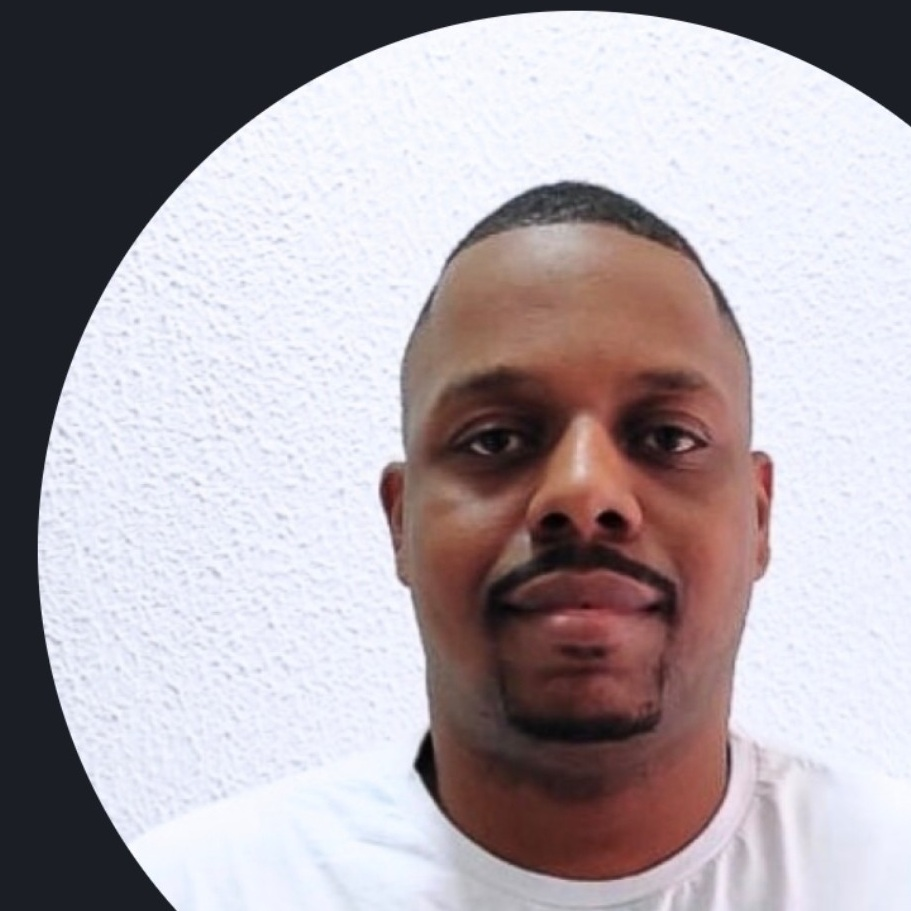

Front-end
Angular · TypeScript · JavaScript · HTML5 · CSS3 · Bootstrap
DESENVOLVIMENTO • TECNOLOGIA • INOVAÇÃO
Transformo desafios de negócio em experiências digitais funcionais, escaláveis e intuitivas. Atuo com desenvolvimento front-end em ambientes corporativos, contribuindo para a evolução de produtos e plataformas.

Sou desenvolvedor com experiência em aplicações web e sistemas corporativos, com foco em front-end. Minha atuação envolve evolução de funcionalidades, integração entre serviços, qualidade de entrega e colaboração com times multidisciplinares.
Tenho vivência em iniciativas de Open Finance, modernização de aplicações e ambientes que exigem atenção à estabilidade, observabilidade e eficiência operacional. Gosto de entender o contexto do produto e contribuir para soluções sustentáveis.
Atuação em contexto de Open Finance para pessoa jurídica, contribuindo com a evolução de aplicações e jornadas digitais.
Experiência descrita de forma resumida. Detalhes de empresas, datas e projetos podem ser ajustados conforme seu currículo atualizado.
Um conjunto de tecnologias e práticas que fazem parte da minha atuação e do meu desenvolvimento profissional.
Angular · TypeScript · JavaScript · HTML5 · CSS3 · Bootstrap
Node.js · Java · Spring Boot · REST APIs · Postman
AWS · Jenkins · GitHub Actions · Docker · CI/CD
Grafana · CloudWatch · Kibana · Elasticsearch
Oracle SQL · Git · VS Code · Jira · Confluence
Scrum · Kanban · colaboração · documentação técnica
Projeto de interface para gestão de chamados, com foco em componentes, organização e operações de cadastro.
Ver no GitHub ↗Experimento voltado ao acompanhamento de informações e indicadores de monitoramento.
Ver no GitHub ↗Explore repositórios, estudos técnicos e novas experiências em desenvolvimento.
Acessar perfil ↗Os dois primeiros cards são descrições resumidas de projetos mencionados anteriormente. Os links levam ao seu perfil do GitHub até confirmarmos os endereços exatos dos repositórios.
VAMOS CONSTRUIR ALGO?